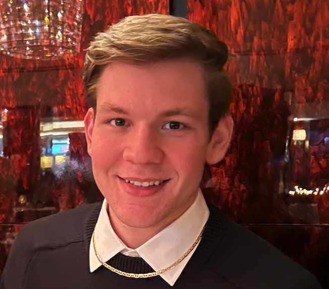

Nicolas Uribe

Email:
nicolasu2002@icloud.com
Phone: (561)-989-4589
Location: Boca Raton, FL
Education
Florida Atlantic University (3.31 GPA)
Boca Raton, Fl | May. 2024
Bachelor of Arts Computer Science, Minor in Artificial Intelligence
Member of The National Society of Leadership and Success
Member of The Investor's Association
Coursework: Intro to C, Intro to Python
Skills
Intermediate level of Python knowledge
Microsoft Office
Computer Hardware Knowledge
Work Experience
Athletic Republic
Boca Raton, Fl | Aug. 2021-Oct. 2022
Front Desk
Made phone calls, text and emails to potential clients
Gathered payment information and setup contracts
Looked for areas to promote Athletic Republic
Answered any questions through phone or in person
Greeted parents and children
Assist clients with setting up and troubleshooting the app AR BASELINE
Charlie James & Co
Boca Raton, Fl | Aug. 2017 - Feb. 2021
Shipping Assistant
Made phone calls, text and emails to potential clients
Gathered payment information and setup contracts
Looked for areas to promote Athletic Republic
Answered any questions through phone or in person
Greeted parents and children
Assist clients with setting up and troubleshooting the app AR BASELINE
Links
Click here
Click here